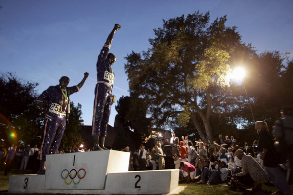

01.01.08
Posted in books, reviews, tennis at 7:55 pm by danvk
(See also podcasts and TV shows)
While podcasts are great for the daily commute, books work pretty well, too. That 2+ hour daily commute translates into a huge number of pages. Most of these are books I read in the latter half of the year.
I’m too lazy to include images this time, but I included two bonus faves at the end to make up for it.
The Omnivore’s Dilemma
Michael Pollan
This book really opened my eyes to how agriculture and the food industry in the United States work. Pollan follows four “food chains” from bottom to top: garden-variety industrial, organic, local and “hunter-gathered”, meeting unforgettable characters along the way. I’ve been reminded many times this year just how much I learned from this book.
Great Expectations
Charles Dickens
It’s almost impossible to believe that I read this book in High School, given how little (i.e. major plot points) I remembered a second time around. I enjoyed the book much more this time around. This is mostly because I’ve had more experiences in my life now than I’d had ten years ago. Having had relationships and having moved from home into the unknown, I found it easy to relate to Pip’s changing fortunes. Estella is the most memorable character. “He calls the knaves Jacks, he does!”
King Leopold’s Ghost
Adam Hochschild
I’d heard “the race for Africa” referenced before reading this book, but never fully understood why it was such a catastrophe. This is an in-depth look at one aspect of it, the exploitation of the Congo by King Leopold’s Belgium for ivory and rubber. This was an extremely educational book for me. It’s a great look into how the world worked in the Guilded Age, as it helped me understand some of Africa’s problems today. One nit, though: Hochschild is inconsistent in whether he judges people by the norms of their own day versus our own. He finds the racism of many of his heroes understandable for its time, but Leopold is always presented as a modern man scheming to exploit the Congolese.
A Moveable Feast
Ernest Hemingway
I heard about this at a Hemingway-themed party and greatly enjoyed it. Though it was published after his death, it recounts Hemingway’s time in Paris in the 1920′s. He has great stories to tell about all the famous writers and groups of the time, and his style works perfectly for this short read.
The Autobiography of Malcolm X
Malcolm X, Alex Haley
Malcolm X lived one of the seminal lives of the 20th century: his father was murdered by the KKK (it was ruled a suicide), he led a colorful life of crime during the Harlem Renaissance, became an influential leader of the Nation of Islam and was assassinated. If you’re not up for reading the book, the Spike Lee movieis fantastic.
OK, now the bonuses! Here are two articles I’ve enjoyed this year that you can read online:
Permalink
12.25.07
Posted in reviews, tv at 11:28 pm by danvk
(See also my favorite podcasts of 2007)
I’m not usually much of a TV watcher, but with shows increasingly going online, a one-hour episode can nicely fill up a shuttle ride. Without further ado, my favorite TV shows of 2007 (the bonus comes at the end):
 I Love New York
I Love New York
(VH1)
Quick question: what’s the most commented-on post on danvk.org? It’s this one by a mile, with 74 comments and counting. Clearly danvk.org should become a Reality TV blog. After some digging, I realized that this was where all the visitors were coming from. New York was a completely hilarious show, hitting its stride about halfway through as the antics of Chance, Mr. Boston and the Stallionaires developed. I haven’t seen much of season two, but I have high hopes.
 House
House
(FOX, Monday nights and online)
Sometime last year Gray’s Anatomy decided that medicine wasn’t interesting anymore and I started looking for a new show. Hugh Laurie could make just about anything entertaining, and the show comes up with some fun cases as well. Major style points for the Massive Attack theme song.
 Frontline
Frontline
(PBS, WGBH Boston)
Frontline won my affections by putting their Endgame" actually made me understand The Surge in Iraq. Almost all episodes are great, but "Hand of God", "A Hidden Life", "e;Tank Man" and "The Age of Aids" are particular favorites.
 Planet Earth
Planet Earth
(BBC and Discovery Channel)
The prettiest show you’ll ever see, this was produced to help push new HDTV’s. One of my friends bought one this year, and this series was simply breathtaking on it. The first episode, “Pole to Pole”, “Caves” and “Jungles” are my faves.
Favorite Hip-Hopera of 2007
There’s just no contest in this post’s special bonus category.
 Trapped in the Closet
Trapped in the Closet
(R. Kelly)
I’m afraid the first five or six scenes of this ‘hopera will squelch this genre with their greatness. R. Kelly just can’t keep up the intensity, and the later episodes are just too complicated. But man are those first few scenes great! Here they are on YouTube. The South Park spoof only adds to the magic.
Permalink
12.24.07
Posted in reviews at 11:29 pm by danvk
(So begins a series of “Favorite X of 2007″ posts. Feel free to add your own faves or otherwise pillory me in the comments.)
Sometime after purchasing an iPod and gaining a two-hour daily commute, I discovered the wonderful world of podcasting. Podcasts are essentially perfect for bus rides. You can listen to them while waiting for my shuttle to come. It takes no effort to pack and unpack my iPod when I get on/off the bus (compare to a book or laptop). Raining? Lights not working on the bus? Laptop low on batteries? No problem.
The podcasting universe as I know it is split between existing shows (from NPR, etc) using a new distribution method and new shows made exclusively as podcasts. The beauty of podcasts is that they allow intrepid amateurs to exploit the long tail of people’s interests. The very best are surprisingly well-produced shows on a particular topic by someone who cares deeply about it. My favorite podcasts of 2007 are split between these two kinds.
This American Life
(WBEZ Chicago Public Radio, updated weekly)
Who doesn’t like this show? Ira Glass and friends find interesting stories from all around the country and bring them to you each week. Almost any episode is interesting but some of my favorites include “Act V”, “Habeas Schmabeas” and “My Reputation”.
Subscribe: iTMS or RSS
Twelve Byzantine Emperors
(Lars Brownworth, sporadically)
Lars is a retired high school history teacher who happens to have a passion for the Byzantine empire and an excellent delivery. Lars finds a way to make each episode entertaining, and you’ll wind up learning a lot about a pretty obscure period that bridges the ancient and modern worlds. Sound too obscure? Think again, this is one of iTunes’ top fifty podcasts.
Subscribe: iTMS or RSS
On the Media
(WNYC — New York Public Radio, Friday evenings)
This is meta-news: reporters reporting on what reporters reported the previous week. And that can often be more interesting and informative than the story itself. In three months of listening to this show, there’s only been one episode I didn’t enjoy. New OTM episodes pop up on iTunes around 6 or 7 Friday evening and, I’ll admit, I’ve stuck around work until then just so I could listen to the new episode on the shuttle.
Subscribe: iTMS or RSS
Sparkletack
(Richard Miller, sporadically)
One part of “the long tail of people’s interests” is local flavor. Sparkletack is the San Francisco History podcast. Richard is a graphic designer who loves his home town, and his podcast has turned him into an amateur historian. Early episodes are short and hit a wide range of topics, then sometime early this year they started to become more professional: longer, more in depth, and better researched. Some of Richard’s mannerisms can be a bit much, but his episodes are generally excellent and give me perspective on my new home. About halfway through one episode, I realized that all the events were taking place at a park just a few blocks from my house! I doubt that many cities have a local history podcast, but if yours does, give it a shot.
Subscribe: iTMS or RSS
 Meet the Press
Meet the Press
(NBC, Sunday mornings)
I’ve always liked Meet the Press, but I could never listen to it in the past, either because I was asleep or in Church on Sunday morning. Podcasting solves that problem. I usually enjoy the analysis more than the interviews with newsmakers.
Subscribe: iTMS or RSS
What are your favorites? I’m always looking for new podcasts, and would love to hear suggestions.
Permalink
12.17.07
Posted in personal, reviews, web at 10:25 am by danvk
I bought one from Fry’s a few months ago because it was the cheapest option and I assumed all wireless routers were more or less the same. Not so. You’d think the D-Link QA people would have discovered that this thing can’t maintain a connection for more than five minutes before it went to market. Here’s a smattering of reviews:
- “Strengths: the lights are really pretty with the rest of the blinking lights that make up my computer setup.
Weaknesses: how about holding a connection for more then 2 minutes”
- “Mistakenly, I didn’t check any reviews before buying it, but if you look, you’ll see the same thing over and over. The WBR-1310 drops its wireless signals, without fail, every 5-15 minutes. Not once, in the entire time I owned it (which was only 2 weeks untill I finally got fed up enough to return it) did it hold a signal for over 15 minutes.”
So do your research before you buy a wireless router! I bought a Linksys WRT54G to replace the D-Link, and have been happy with it in the past two days of use. The Wiki article says that this was the first wireless router to have its firmware open-sourced. As my roommate pointed out, that speaks volumes about Cisco’s confidence in this product.
Permalink
09.05.07
Posted in personal, reviews, sports at 10:43 pm by danvk
I took a walk around the San Jose State University campus yesterday, and stumbled upon this statue:

It’s based on the famous photograph of the black power salute at the 1968 Olympics:
Although less controversial now than it was at the time, I was still surprised to see this moment memorialized as a statue. The more I thought about it, the more it bothered me.
Read the rest of this entry »
Permalink
« Previous Page — « Previous entries
Next entries » — Next Page »